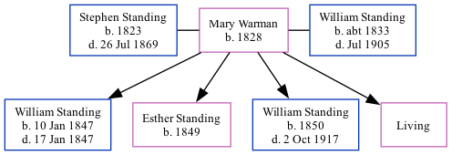

Mary Ann Standing (née Warman) 1828 -
[ Home ] | [ Calendar ] | [ Surnames Index ] | [ Family History ]Mary Warman, the wife of Stephen Standing (the first cousin four-times-removed on the father's side of Nigel Horne), was born in Folkestone, Kent, England in 18281,2,3 was married twice - to Stephen Standing (on Nov 28, 1846 in Folkestone) William Standing (on Mar 1, 1865 in Folkestone)4. She had 4 children with Stephen Standing: William, Esther Hannah, William Stephen and Mary Ann.
Throughout her life, Mary lived in several places: at her birthplace in 18511; at Fancy Street, Elham, Kent, England on Mar 30, 18515; and on Fancy Street in Folkestone on Apr 7, 18613.
Children
- William was born on Jan 10, 1847
- Esther Hannah was born in 1849
- William Stephen was born in 1850
Citations
- 1851 England Census Online publication - Provo, UT, USA: The Generations Network, Inc., 2005.Original data - Census Returns of England and Wales, 1851. Kew, Surrey, England: The National Archives of the UK (TNA): Public Record Office (PRO), 1851. Data imaged from the National (Relation to Head of House: Wife)
- 1861 England Census Online publication - Provo, UT, USA: The Generations Network, Inc., 2005.Original data - Census Returns of England and Wales, 1861. Kew, Surrey, England: The National Archives of the UK (TNA): Public Record Office (PRO), 1861. Data imaged from the National
- 1861 England, Wales & Scotland Census - Findmypast (was age 33 and the wife of the head of the household)
- England & Wales Marriages 1837-2005 - Findmypast
- 1851 England, Wales & Scotland Census - Findmypast (was age 25 and the wife of the head of the household)
Media
Stephen Standing - Mary Warman - marriage certificate

Canterbury Marriages Transcription - GBPRS-CANT-M-97001461-1
England & Wales Deaths 1837-2007 - BMD/D/1864/4/MW/000842/021
Family Tree
Generated by Ged2Site. Last updated on Jul 20, 2025